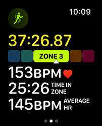
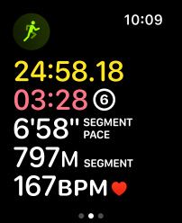
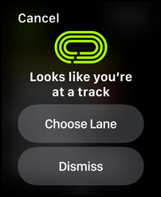
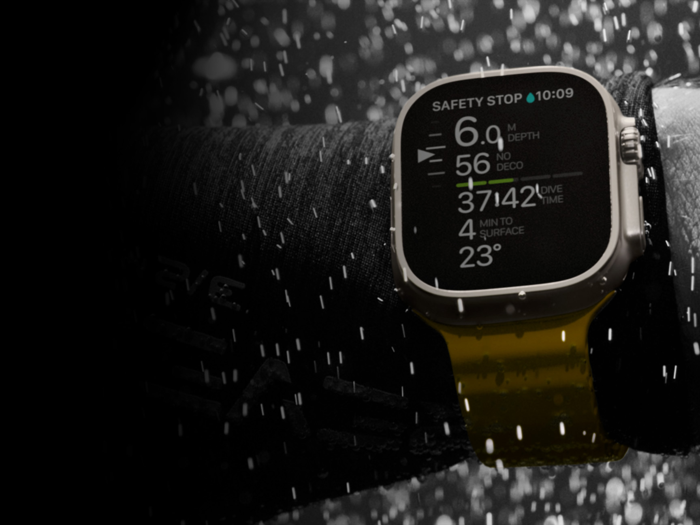
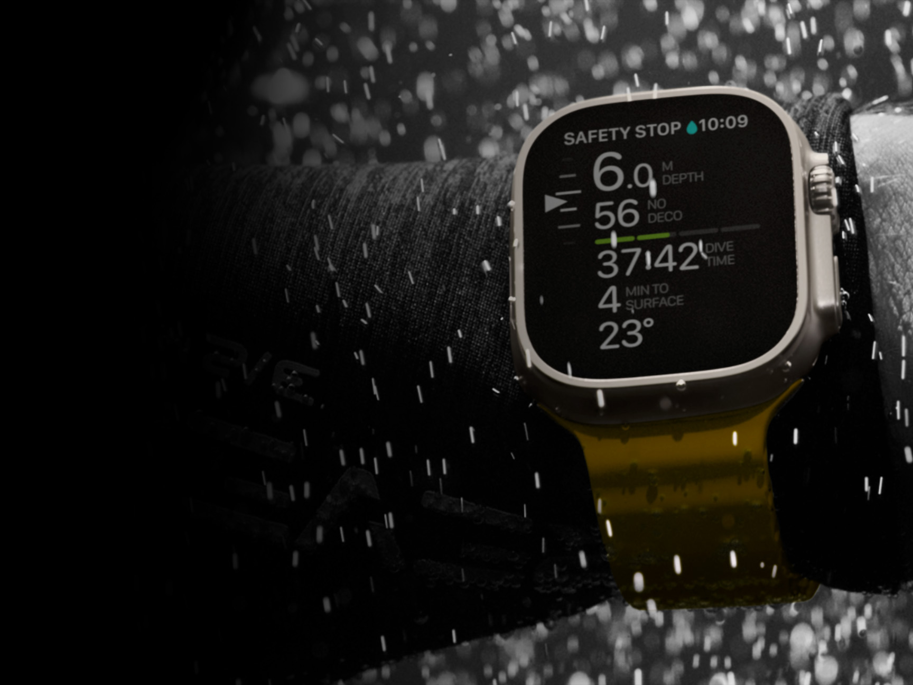

Heart Rate Zones.
Quickly see your intensity level. Training zones are automatically calculated and personalized using your health data, or you can create them manually.

Running Form.
Add Stride Length, Ground Contact Time, and Vertical Oscillation to your views to understand how efficiently you run.

Track Detection.
Workout detects when you arrive at a track, and uses both Apple Maps data and GPS to provide the most accurate pace, distance, and route map.
 Design
Design
 
